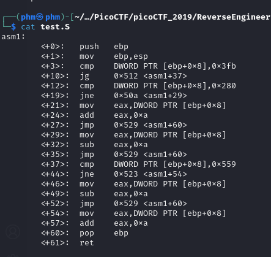

Let's look at the file.

As we can see,it's assembley:).
Fun fact about me,I am in love with assembley and I would much rather write in asm than in python.
Joke aside,let's try to understand the code.I will use this to solve this CTF:
this
We know that the result of a function will be in eax.
Let's take asm1 as a function and 0x2e0 as its parameter.Before we call that function,
0x2e0 goes on the stack.
We know the stack pointer goes down,So we can try to imagine the stack:
Stack:
old ebp //where esp should point to
return address
0x2e0 //param of the function
So with the "mov ebp,esp" operation ebp will point to the old ebp/current esp.That means that
DWORD PTR [ebp+0x8] will point to 0x2e0.
Let's check the first cmp,it compares 0x2e0 with 0x3fb.The jump happens only if 0x2e0 > 0x3fb which is false.
The second cmp compares 0x2e0 with 0x280.The jump happens if the 2 values are not equal and that's true.
We jumped on line 29 and we can see we move 0x2e0 in eax.
Next line subtracts 10 from eax. Eax becomes 0x2d6.
We jump on line 60 where we prepare to return to the main function.
On line 61 we have the return call.
Eax is 0x2d6.
Flag : 0x2d6